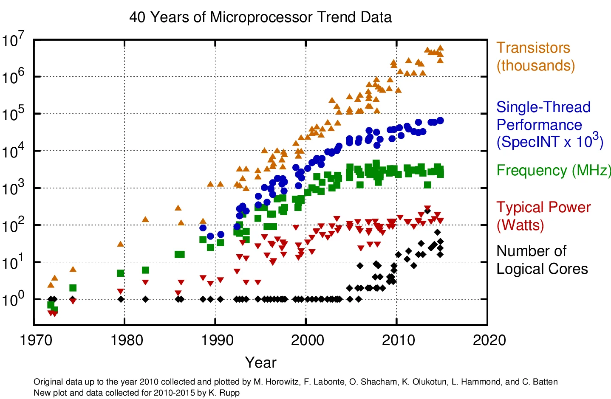

Optimizing Raytracing in one weekend in C++
GitHub Repository
Here is the Performance Document where the render times are logged.
And here's the Bibliography for this Research Project.
Optimization, Multithreading, SIMD & Compute Shaders
I'm Currently doing a research project & the theme I've chosen for myself is "Optimization".
After finishing the 1st book I was kinda annoyed at the render time, and as I went through the 2nd book it only got worse and the final render I did took 5 Hrs and was still quite noisy (not good), so today we will be looking into optimization techniques :
- SIMD (explanation)
- Multithreading (explanation)
- Compute Shaders (explanation)
The goal is to Parallelize the existing raytracing code to dramatically cut render times (it's annoying but doable).
Each of these should shorten render times by quite a bit and allow us to use more samples & bounces.
Where do we start ?
State of the art
We’ll build on the C++ code from Peter Shirley’s Ray Tracing in One Weekend series.
Several community ports already implement & extend the raytracer :
- utilForever’s C++17 repo
- CUDA adaptation parallelizing the raytracer.
On the algorithmic side, data-level parallelism research highlights SIMD (Single Instruction, Multiple Data) to leverage hardware vector units and process many data elements in a single instruction.
More reading about data-level parallelism : "exploiting Data Level Parallelism" and "Data Level Parallelism Lecture".
At a higher level, multithreading frameworks go from simple work-queue models to Apple’s Grand Central Dispatch further accelerating renders by distributing pixel-level tasks across multiple CPU cores.
Amdahl’s Law state that : "the overall performance improvement gained by optimizing a single part of a system is limited by the fraction of time that the improved part is actually used".
Finally, modern GPUs expose Compute Shaders (With OpenGL 4.3+ HLSL/DX11+ kernels) that enable massive parallelism outside the traditional rasterization pipeline, allowing us to offload raytracing workloads directly onto graphics hardware with thousands of concurrent threads.
We will start of with the finished code of book 2
Should look a little something like this :
.webp)
img. Source
SIMD
"Single instruction, multiple data (SIMD) is a type of parallel processing in Flynn's taxonomy.
SIMD describes computers with multiple processing elements that perform the same operation on multiple data points simultaneously.
SIMD can be internal (part of the hardware design) and it can be directly accessible through an instruction set architecture (ISA), but it should not be confused with an ISA."
Source.
SIMD is basically operations on arrays, like so :

img. Source
SIMD use in Unity3D
Things to Remember :
- If you're using the correct memory layouts when implementing SIMD, the rest of the problems will solve themselves.
- Parallel performance largely depends on the extent to which your program is parallelized.
- Compiling code with the -march=native flag generates optimized code for your CPU.
How do we achieve this ?
Since SIMD is not a computation problem, it's simply a memory layout problem.
To make our sphere data "SIMD-friendly", we will use the Structure of Arrays (SoA) where each field is stored in its own array.
SoA excels when you frequently access only a subset of a struct’s members, each cache line then holds just the data you need, leading to significant gains in performance.
However, since our ray-tracing functions always reference every Sphere field together, a pure SoA approach isn’t ideal.
Instead, we use an Array of Structures of Arrays (AoSoA) layout. In AoSoA, each field is still an array, but its length matches the SIMD lane width (LANE_WIDTH).
If we have more spheres than fit in one SIMD vector, we simply add another “lane” (another fixed-size chunk) to our AoSoA.
This way, each chunk maps perfectly onto SIMD registers, maximizing both alignment and throughput.
Like so :
SIMD.h
// Wide vector3 struct
struct LaneVector3
{
LaneF32 x;
LaneF32 y;
LaneF32 z;
LaneVector3();
LaneVector3(LaneF32 x, LaneF32 y, LaneF32 z);
LaneVector3(float arr[3][LANE_WIDTH]);
LaneVector3(Vector3 vector);
LaneF32& operator[](int index);
};Here is a good video about this problem.
Amdahl's Law
We are not gaining as much as we should from SIMD & SSE operations, but why ?
Amdahl's Law states that the overall speedup from parallelization is limited by the portion of the program that must remain serial.
In our case, 50% of execution time is spent in the Intersection function.
As the chart below illustrates, no matter how many cores or SIMD lanes we employ, the maximum achievable speedup caps at 2x.
This explains why using a 4-lane vector unit doesn't yield a 4x performance gain.

img. Source
And remember : "Don't do anything you don't need to".
With SIMD we managed to cut render time in 2.
Final recorded Time :
case 10: FinalSceneB2(600, 200, 100, 20, 250) :
- Non-Optimized : 5 Hrs
- SIMD Optimized : 2 Hrs 18 Min
MultiThreading
"Multithreading is a form of parallelization or dividing up work for simultaneous processing.
Instead of giving a large workload to a single core, threaded programs split the work into multiple software threads.
These threads are processed in parallel by different CPU cores to save time."
Source.
Things to Remember :
As this blog by rygorous states :
After writing shared data, other threads must throw all the work, retrieve the latest value of the variable since the cached version is no longer valid, and then restart their tasks. This phenomenon is referred to as "false sharing".
Here is an interesting video talking about Cpu Caches.

img. Source
If you're in computer science you've probably seen this image or a variation of it.
This image shows us that, although transistor counts continue to climb in a somewhat linear fashion, the era of ever-increasing single-threaded processor speeds is effectively over.
As a matter of fact, as the gains in single-core performance have tapered off, chip designers have responded by packing ever more logical cores onto each die.
The takeaway is that if your application relies on a purely single-threaded workload, you’ll see diminishing returns on the latest CPUs. To harness their full power, you must divide your work across multiple cores.
Breaking a Program into Parallel Tasks :
To exploit multiple CPU threads, you first need to decompose your program into independent pieces, a notoriously tricky challenge in general. Once you’ve done that, you then need to coordinate those pieces safely, which often introduces overhead. Fortunately, ray-tracing is a textbook example of an “embarrassingly parallel” problem :
- each pixel in the final image can be computed in isolation.
We are calculating each pixel. And almost every pixel is independent, so synchronization will be minimal. The cores are going to render each pixel independently, and when all the pixels are done, we put it all together into the final image.
Lock-Free Synchronization with Atomics
I’ve been looking into lockless programming techniques, (intro to lock free programming & an interesting talk about Lock-free vs Mutex) , & how compilers and CPUs reorder memory operations, the differences between various architectures, and so on.
Much of what I’ve read uses the Windows API, but the underlying principles apply across platforms.
While traditional mutexes are often the easiest way to guard shared data, I plan to use atomic instructions instead, so threads never block one another, since Lock-free programming is only for some rare use cases, typically with lots of threads meeting at the same variable.
In the context of this ray-tracer project where synchronization needs are minimal I believe an atomic-based approach will be straightforward and more performant.
So how do we divide work evenly to all threads ?
The answer is simple : We divide the image into multiple parts/tasks.
Threads pull the next available task from a shared queue as soon as they finish their current one. This way, if one thread encounters a lengthy job, all the others remain busy with other tasks.
A good explanation for this problem here.
We could spawn one thread per image row and leverage Apple’s Grand Central Dispatch (GCD). which lets you easily multi-thread your loop using the dispatch_apply function, GCD automatically distributes iterations across all available threads and waits until they're all complete, with no manual synchronization needed.
This could work quite well & wouldn't be too hard to implement.
Ultimately, though, we're going to use the simple work-queue approach from Handmade Ray.
We package units of work into “orders” and push them onto a queue. Each thread continuously fetches and executes orders, if the queue is empty, the thread idles until new work appears.
A little something like this :
Work Queue
struct WorkOrder
{
Image* image;
World* world;
uint32_t startRowIndex;
uint32_t endRowIndex;
uint32_t sampleSize;
uint32_t* randomState;
};
struct WorkQueue
{
uint32_t workOrderCount;
WorkOrder* workOrders;
volatile uint64_t nextOrderToDo;
volatile uint64_t finishedOrderCount;
volatile uint64_t totalBouncesComputed;
};
bool RaytraceWork(WorkQueue* workQueue)
{
uint32_t nextOrderToDo = InterlockedAddAndReturnPrevious(&workQueue->nextOrderToDo, 1);
if (nextOrderToDo >= workQueue->workOrderCount)
{
return false;
}
fetch the next WorkOrder
...
raytracing
...
InterlockedAddAndReturnPrevious(&workQueue->totalBouncesComputed, totalBounces);
InterlockedAddAndReturnPrevious(&workQueue->finishedOrderCount, 1);
return true;
}In the end we managed to boost render time by roughly 2x for renders using Multithreading.
But we did not speed up linearly after using the third and fourth thread, meaning we don't gain as much as expected from Hyper-Threading, but honestly I'm not very experienced in hyper-threading (or multithreading) outside of this project, so perhaps I will do another post on this.
Final recorded Time :
case 10: FinalSceneB2(600, 200, 100, 20, 250) :
- Non-Optimized : 5 Hrs
- Multithreading Optimized : 2 Hrs 9 Min
Compute Shaders
"A compute shader provides high-speed general purpose computing and takes advantage of the large numbers of parallel processors on the graphics processing unit (GPU).
The compute shader provides memory sharing and thread synchronization features to allow more effective parallel programming methods."
Source.
Things to Remember :
Base Raytracing code & Compute shader code aren't that far apart, so it's not too hard to transfer one to the other just annoying.
One of the issues with GPU porting is that GLSL doesn't map memory into zeros. You should be aware that it doesn't have a constructor that we use in C++ for filling struct memory with zeros
you should also beware of alignment since it was one of the main causes for a black screen, When using UBO or SSBO.
But How ?
The point of this is to transfer the raytracer to the GPU, and since our code is already broken into parts it shouldn't be much of a hassle to transfer it into GPU.
The compute shader is going to do the same work that the CPU is doing. Then it is going to produce the image as a texture object and send that texture into the fragment shader.
That fragment shader is then going to gamma correct the image and render it to the screen.
fragment.glsl
#version 450 core
in vec2 texCoord;
uniform sampler2D image;
out vec4 finalColor;
#define Clamp(A, c, B) clamp(c, A, B)
float LinearTosRGB(in float value) {
value = Clamp(0.0f, value, 1.0f);
float result = value * 12.92f;
if (value >= 0.0031308f) {
result = (1.055f * pow(value, 1.0f / 2.4f)) - 0.055f;
}
return result;
}
vec3 LinearVectorTosRGBVector(in vec3 value) {
vec3 result;
result.x = LinearTosRGB(value.x);
result.y = LinearTosRGB(value.y);
result.z = LinearTosRGB(value.z);
return result;
}
void main () {
vec3 rawColor = texture(image, texCoord).xyz;
finalColor = vec4(LinearVectorTosRGBVector(rawColor), 1.0);
}For this we're going to use OpenGL, since it is easier than something like vulkan, and it's the one I have most experience in.
OpenGL has compute shader support since version 4.3, so any newer version will work.
I won't explain here how to do all the setup for OpenGL, but you can find what you need here.
Buffers
When it comes to writing shaders, shader languages closely resemble C++, so you can often paste your ray-tracer code directly into a shader file.
The only differences are in data type names and some built-in function names, so beware of that, or you could make a macro to map them to the CPU versions.
One challenge is how to supply scene data to the compute shader, GLSL offers two main buffer types for this :
- Uniform Buffer Objects (UBOs) for small, fast-access data
- Shader Storage Buffer Objects (SSBOs) for larger datasets.
We're going to go with SSBOs because they allow variable-length arrays, this will let us pass scene elements without pre-defining a fixed size. In practice, you should declare an SSBO in GLSL like this:
SSBO
layout(shared, binding = 0) buffer MaterialBuffer {
Material gMaterials[]; // Variable size array
};Alignment
So that went well, but there is another problem (I mentioned this above). The alignment of SSBO structs is not the same as C++ ones.
According to the OpenGL specification :
"(9) If the member is a structure, the base alignment of the structure is <N>, where <N> is the largest base alignment value of any of its members, ..."
In our case, we have vec3 in our structs. Size of vec3 is 12 bytes but vec3 count as vec4. So our alignment for structs should be 16. This can be done in many ways. You can put padding data into the structs,
Or we can define offsets and tweak layout properties using the enhanced layout extension.
Material
struct Material
{
// These two can be bundled as a vec4. First three component for color and the last one is for refractiveIndex;
Vector3 color;
float refractiveIndex;
// These two as well
Vector3 emitColor;
float reflection;
};This can be done in GLSL like so :
GLSL Material
struct Material
{
// In GLSL, all the vec3 type variables are aligned to 16 bytes (vec4).
// We can use extra float padding with the enhanced layout extension.
// layout(component = 3) means w component of vec4 holds this value.
vec3 color;
layout(component = 3) float refractiveIndex;
vec3 emitColor;
layout(component = 3) float reflection;
};This work quite well with intel integrated GPUs, but the enhanced layout extension does not support compute shaders on Nvidia GPUs, so we can abandon the code above, and now we need to align them in cpp.
Align Material struct in CPP
// Align these struct members to 16 byte.
__declspec(align(16)) struct Material
{
Vector3 color;
float refractiveIndex;
Vector3 emitColor;
float reflection;
};Checking for Errors
When we write an OpenGL app we will often see thing we don't like (e.g. black screen, white screen, crash, etc...)
so we need to find these errors by creating our OpenGL context with debugging properties.
We can check for errors by calling glGetError() after each OpenGL function.
We can register a debug callback function via glDebugMessageCallback(), This lets OpenGL automatically report errors (and other messages) to your callback, eliminating the need for manual glGetError() checks everywhere.
like so (the following code is by Morten Nobel-Jørgensen) :
OpenGL Callback Function
void APIENTRY openglCallbackFunction(GLenum source, GLenum type, GLuint id, GLenum severity, GLsizei length,
const GLchar* message, const void* userParam)
{
std::cout << "---------------------opengl-callback-start------------" << '\n';
std::cout << "message: "<< message << '\n';
std::cout << "type: ";
switch (type)
{
case GL_DEBUG_TYPE_ERROR:
std::cout << "ERROR";
break;
case GL_DEBUG_TYPE_DEPRECATED_BEHAVIOR:
std::cout << "DEPRECATED_BEHAVIOR";
break;
case GL_DEBUG_TYPE_UNDEFINED_BEHAVIOR:
std::cout << "UNDEFINED_BEHAVIOR";
break;
case GL_DEBUG_TYPE_PORTABILITY:
std::cout << "PORTABILITY";
break;
case GL_DEBUG_TYPE_PERFORMANCE:
std::cout << "PERFORMANCE";
break;
case GL_DEBUG_TYPE_OTHER:
std::cout << "OTHER";
break;
}
std::cout << '\n';
std::cout << "id: " << id << '\n';
std::cout << "severity: ";
switch (severity)
{
case GL_DEBUG_SEVERITY_LOW:
std::cout << "LOW";
break;
case GL_DEBUG_SEVERITY_MEDIUM:
std::cout << "MEDIUM";
break;
case GL_DEBUG_SEVERITY_HIGH:
std::cout << "HIGH";
break;
}
std::cout << '\n';
std::cout << "---------------------opengl-callback-end--------------" << '\n';
}One of the big error we get is "Long Running Execution" or TDR, here is a video talking about GPU crash debugging by Nvidia as well as this article by microsoft that talks about TDR and what steps to take to resolve it.
Basically what TDR does is : "If the operating system does not receive a response from a graphics card within a certain amount of time (default is 2 sec), the operating system resets the graphics card.", so we just reduce the sample size, and it works again !!
Progressive Rendering
what is Progressive Rendering ?
First we render a very low quality sampled image and then progressively refining it as more samples are accumulated.
Let's add that behavior : on each frame, we’ll blend in the newly rendered image with the running average to gradually improve quality.
Something like this :
Progressive Rendering
// First image.
layout(rgba32f, location = 0) readonly uniform image2D srcImage;
// Output image.
layout(rgba32f, location = 1) writeonly uniform image2D destImage;
...
// Number of frames averaged
layout(location = 4) uniform uint32_t frameIndex;
...
// Calculate the sum of all the previous samples
Vector3 sumColor = prevColor * frameIndex;
// Add new color to sum, then re-average it.
Vector3 finalColor = (color + sumColor) / (frameIndex + 1);
imageStore(destImage, pix, vec4(finalColor, 1.0));Performance
OpenGL supports Atomic Counters, so we could count the ray bounces, or we could use SSBO again for the counter, then use naive atomic add operation, after the compute shader finished its job, you map the bounce count to SSBO so you can read the bounce count.
Both of these have roughly the same performance, so you can use either, We will use the second method, like so :
Atomic Operations
layout(binding = 3) buffer Counter {
uint32_t gBounceCount;
};
...
atomicAdd(gBounceCount, totalBounces);
// C++ code
glBindBuffer(GL_SHADER_STORAGE_BUFFER, bounceCountSSBO);
uint32_t* counter = (uint32_t*) glMapBuffer(GL_SHADER_STORAGE_BUFFER, GL_READ_ONLY);
bounceCount = counter[0];
glUnmapBuffer(GL_SHADER_STORAGE_BUFFER);and now we just run our code and hope for the best.
Here are two of the renders :

Render time : regular = 30mins; compute shaders = 1min
img. Source